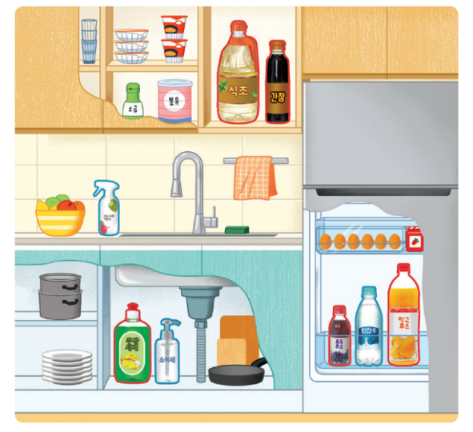

1번
다음은 일상생활 속에서 볼 수 있는 여러 가지 용액들의 모습입니다. 사진에서 빨간색 선과 파란색 선으로 표시된 용액들을 찾아보고 어떤 기준으로 분류한 것인지 고르세요.

빨간색 선으로 표시된 용액은 주방세제, 간장, 식초, 망고주스, 포도 주스가 있으며 파란색 선으로 표시된 용액은 소독제, 탄산수 등이 있습니다.
이 용액들을 분류한 기준은
ㄱ
이(가) 있는가? 입니다.
만약 식초와 탄산수 두 가지 용액을 ‘그렇다’와 ‘그렇지 않다’로 각각 분류할 때 사용할 수 있는 분류 기준은
ㄴ
입니다.